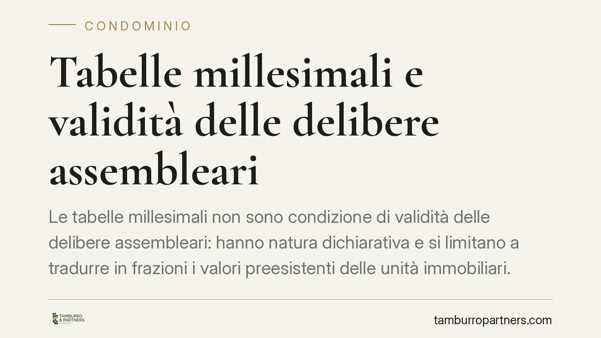

Tabelle millesimali e validità delle delibere assembleari
Le tabelle millesimali non sono condizione di validità delle delibere assembleari: hanno natura dichiarativa e si limitano a tradurre in frazioni i valori preesistenti delle unità immobiliari. La giurisprudenza di merito ha inoltre ritenuto illegittimo il rifiuto del conduttore di consentire l'accesso ai tecnici incaricati della revisione. Chiariamo perché conta e cosa fare.

Il punto della questione
Un equivoco ricorrente nelle assemblee condominiali è ritenere che, in assenza di tabelle millesimali approvate, le delibere adottate siano automaticamente invalide. Non è così.
Le tabelle millesimali hanno natura dichiarativa e non costitutiva: non creano diritti, ma si limitano a esprimere in valori proporzionali (i millesimi) una situazione – il valore delle singole unità rispetto all'intero edificio – che esiste già a prescindere dalla loro redazione. Sono, in altre parole, uno strumento di calcolo, non la fonte dell'obbligo contributivo.
Inquadramento normativo
Il criterio di ripartizione delle spese è fissato dall'art. 1123 c.c., che àncora l'obbligo contributivo al valore della proprietà di ciascun condomino. Le tabelle servono ad applicare concretamente quel criterio, ma non ne sono presupposto di esistenza.
Secondo l'orientamento consolidato delle Sezioni Unite, la delibera di approvazione delle tabelle non ha natura negoziale: non è un accordo tra i condomini, ma l'accertamento di un dato tecnico. Da qui la conseguenza che la mancata o errata approvazione non travolge, di per sé, le deliberazioni assembleari validamente assunte.
La revisione delle tabelle è regolata dall'art. 69 disp. att. c.c. Qui occorre una distinzione netta, troppo spesso trascurata:
- quando la revisione è richiesta perché le tabelle sono conseguenza di un errore oppure perché i valori sono mutati in modo apprezzabile (ad esempio per sopraelevazione o accorpamento di unità), è sufficiente la maggioranza prevista dall'art. 1136, co. 2, c.c.;
- quando invece si intende modificare i criteri legali o convenzionali di ripartizione, serve l'unanimità, trattandosi di incidere su diritti dei singoli.
Confondere i due piani è la causa più frequente di impugnazioni fondate.
Il rimedio corretto: revisione, non impugnazione
Chi ritiene errate le tabelle non deve impugnare ogni singola delibera che le applica. La via tecnicamente corretta è l'azione di revisione ex art. 69 disp. att. c.c., diretta a correggere il documento. L'impugnazione della delibera resta invece il rimedio per i vizi propri della deliberazione (difetti di convocazione, maggioranze, oggetto).
Tenere distinti i due strumenti evita il rischio di agire con il mezzo sbagliato e di vedersi respingere la domanda per questa sola ragione.
L'accesso dei tecnici incaricati della revisione
Un profilo pratico rilevante riguarda l'accesso alle unità immobiliari da parte dei tecnici incaricati di rilevare superfici e caratteristiche ai fini della revisione.
La giurisprudenza di merito ha ritenuto illegittimo il rifiuto opposto dal conduttore all'ingresso dei tecnici, riconoscendo al condominio – in presenza dei presupposti – la tutela d'urgenza prevista dall'art. 700 c.p.c. Il punto da sottolineare è che l'obbligo di consentire l'accesso non grava solo sul proprietario, ma anche sul conduttore, in qualità di detentore dell'immobile: il rilievo tecnico serve a determinare valori oggettivi dell'unità e non può essere paralizzato da chi ne ha la sola disponibilità materiale.
Implicazioni pratiche
Per l'amministratore significa poter procedere con l'attività gestoria senza attendere la definitiva sistemazione delle tabelle, purché le ripartizioni rispettino i criteri di legge. Per il singolo condomino significa che le contestazioni sui millesimi vanno incanalate nella revisione, con le maggioranze corrette a seconda del caso. Per il conduttore significa che non può opporre un diniego ingiustificato ai rilievi tecnici.
Cosa fare in concreto
- Verifica il tipo di intervento: distingui subito se si tratta di correzione per errore/mutato valore (maggioranza) o di modifica dei criteri (unanimità). Da questo dipende la legittimità della delibera.
- Scegli il rimedio giusto: per contestare le tabelle promuovi l'azione di revisione ex art. 69 disp. att. c.c.; riserva l'impugnazione ai vizi propri della delibera.
- Documenta l'accesso: in caso di revisione, comunica per iscritto a proprietari e conduttori date e finalità dei sopralluoghi, conservando prova dell'invito.
- Formalizza il diniego: di fronte a un rifiuto ingiustificato del detentore, valuta con un legale la tutela d'urgenza ex art. 700 c.p.c.
- Richiedi una consulenza preventiva: prima di deliberare modifiche alle tabelle, consigliamo una verifica delle maggioranze necessarie, per non esporre la delibera a impugnazione.
---
Contributo informativo a cura di Tamburro & Partners Avvocati - Avv. Giuseppe Tamburro. Non costituisce parere legale.
Ogni condominio ha una storia a sé.
Se gestisci un'amministrazione e vuoi un confronto su una specifica questione condominiale, scrivi allo studio. Ti rispondiamo entro un giorno lavorativo.